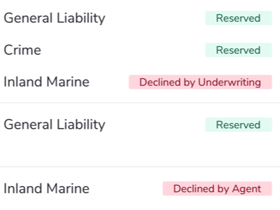
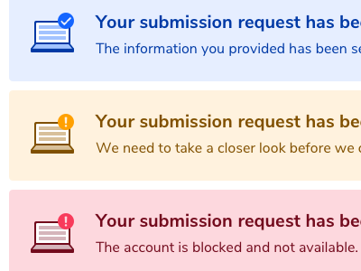

Finding a Carrot for the Stick
ProSight's broker portal, ProSight Online for Partners, has existed for quite some time for exclusively informational purposes. Brokers come in, get information on their accounts, and get out. They come infrequently, generally in response to queries from their clients. With the introduction of Online Submissions, we are introducing the first transactional functionality to the portal and dramatically changing user behavior.
Our business goal was straightforward: get brokers to submit new business online in a standard format to drive efficiency. However, coaxing users to change their behavior would not be an easy task. Their current process was to send an email of whatever information they had to our underwriters. This was not only quick and easy, but had unlimited flexibility as long as the broker didn’t mind going back and forth over email.
For this to succeed, we needed to create a tangible benefit—a carrot for our stick—to encourage brokers to change their behavior and drive adoption of the new process.
Understanding the Business
Before any design work could start, I needed to learn more about the existing business process and identify any pain points that we could address and turn into motivators for our digital solution.
After numerous interviews with both internal underwriters and external brokers, I created a Service Map of the existing process:
This map served as a great way to visualize painpoints in the process. There was clear frustration on both sides which stemmed from insufficient communication. With that in mind, I began to concept an interface based on key features that would address these gaps head on:
-

Real-time Status Indicator
There was no way to check on a new business request that didn’t involve pestering an underwriter with manual follow-ups. Adding an online dashboard with real-time status will improve visibility and transparency, saving everyone time and emails.
-

Immediate Confirmation
In the existing process, a broker might not know if their submission has been accepted for days or worse. With immediate confirmation brokers can be confident their request has been received and can file it to their internal Agency Management System for their records.
The revised service map, including a new digital interface, was designed to flip what was currently a point of frustration into a high point of the experience.
Roughing Out a Concept
From there, I began to rough out a concept design of the workflow. Keeping in mind that the product was competing against email, I took care to ensure that we were only asking for information that was absolutely needed by our underwriters, eliminating or automating anything that was extraneous.
Once the concept was in a decent spot, I reviewed it with stakeholders and potential users to identify gaps in the experience. In multiple user interviews, I identified an unexpected difficulty: users didn’t know what documentation is required across different types of business. By leaving the documentation upload open-ended, I’d actually created a point of friction for users.
I went back to various underwriters in an attempt to nail down a consistent set of required documents. But it seemed that there was a tremendous amount of variation – a downside of being a “specialty” insurance company. Eventually, I arrived at a design that assigned documents to specific required buckets that each housed a different group of documents. This provided the flexibility needed by underwriting but also was rigid enough for users to follow.
Everything was downhill from there. I hashed out all the error handling, email notifications, duplicate detection, and all the other nitty gritty details and got this thing launched. You can check out a bunch of key screens on Dribbble.
Launching and Verifying Success
The new Online Submission system was launched to a select few brokerage agencies to kick the tires. After a few weeks of using the tool, I reached back out to both underwriters and brokers to get a sense of the success of the product.
Feedback was overwhelmingly positive and validated that the two motivators identified were driving adoption. The only major critique we received was that it was too limited, brokers wanted to continue to receive quote letters and issue policies online. But, for now, that’s going to be manually processed via email.
After the trial run’s success, the product is set to be rolled out to all agencies and be the required process for all new business submissions going forward.